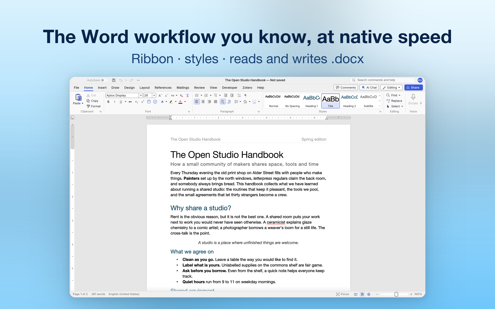
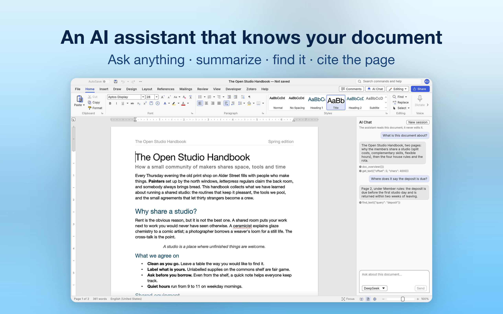
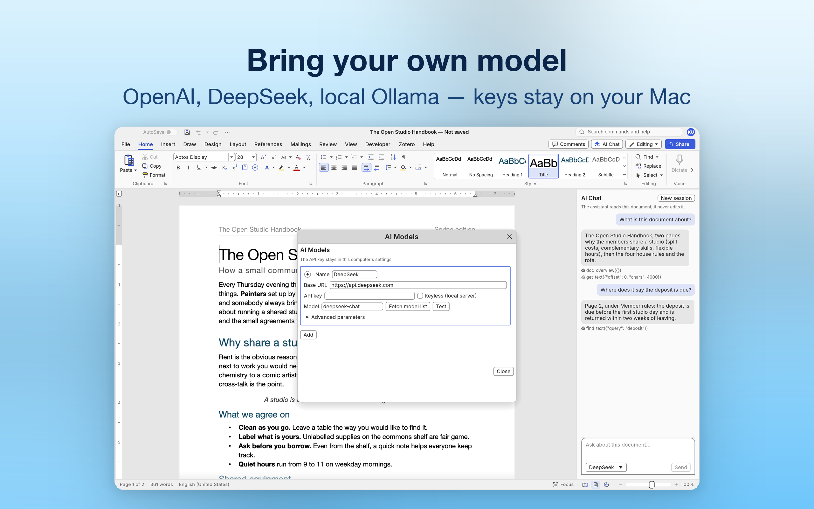
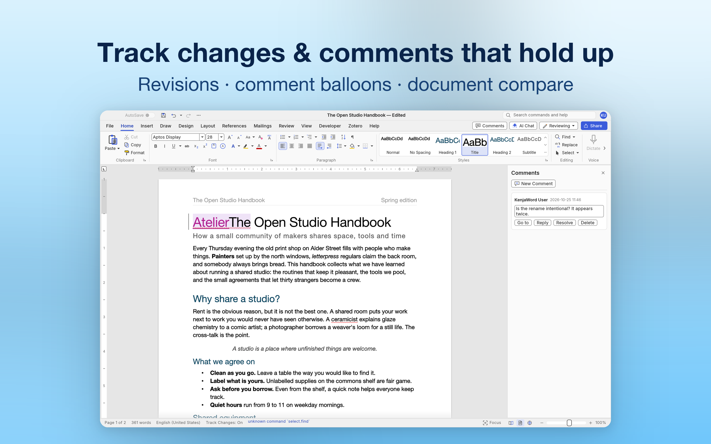
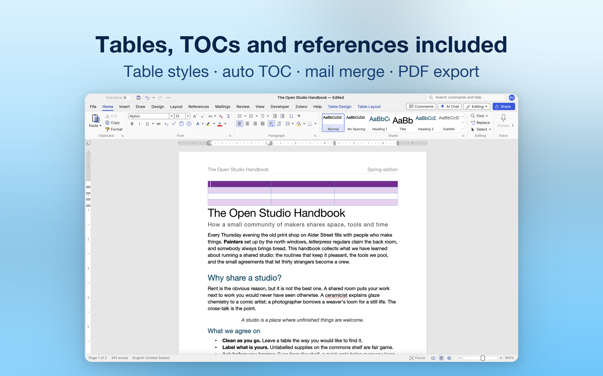

01 · 写作
无需重新学习
功能区、样式库、标尺、状态栏字数——布局就是你熟悉的那一套，周一早晨不需要说明书。所有内容存回 .docx，Word 打开毫无怨言。
KenjaWord 是一款快速、兼容 Word 的 Mac 文字处理器。 打开并保存真正的 .docx 文档——样式、表格、引用、修订——用的还是你已经熟悉的功能区。 而你的文档，从不需要离开你的 Mac。

写作、提问、审阅、成稿，不必切换应用——各部分互相打通，一切最终落回 .docx。
功能区、样式库、标尺、状态栏字数——布局就是你熟悉的那一套，周一早晨不需要说明书。所有内容存回 .docx，Word 打开毫无怨言。
问它文档讲了什么、押金条款在哪一页、谁被提到了——AI 面板会阅读你的文档（概览、正文、检索），并按页码引用作答。它只阅读；除非你开口，它不动你的文字。

连接 OpenAI、DeepSeek、本地 Ollama——任何 OpenAI 兼容端点。API Key 留在这台 Mac 的设置里，请求从你的机器直达你选择的端点，不经任何中转。不想用 AI？不配置它，它就永远不会联网。

修订、批注气泡、文档比较——全部按 Word 的方式存储。文档在 Word、LibreOffice 与 KenjaWord 之间来回流转，每一次修改的作者与时间戳都完好如初。

带实时样式库的表格、自动目录、脚注、邮件合并、公式，以及 PDF 导出。长文档的全套机械都在基础功能里——不是加购项。

不是「带点编辑功能的查看器」——是一部为速度与开放而重建的完整文字处理器。
.docx 双向读写是原生格式；.doc、RTF、ODT、HTML 与 Markdown 也能打开，并可导出 PDF——「你能打开这个吗？」永远是「能」。
Rust 打造——秒开应用，长文档边打字边保持顺滑。没有 Electron，没有挡在光标位置上的转圈。
在标题栏搜索全部命令，用快捷键与 KeyTip 驾驭功能区，或者用命令行驱动整个应用。
简体中文、繁體中文、日本語、한국어、Deutsch、English 等——随时切换，校对语言还能按文档单独设置。
配合你本机上的 Zotero 应用插入与刷新引文和参考文献。字段按 Word 的 Zotero 插件方式存储，文档始终可移植。
Office 数学公式（OMML）可读、可写、可编辑——以主题颜色完整往返 Word，Word 那边依旧可以继续编辑。
KenjaWord 在你的机器上干活，不与任何人通信——无账号、无统计、无遥测。AI 面板是它唯一可能建立的连接，而且从你的 Mac 直达你配置的端点。App Store 隐私标签：不收集数据。
可以。.docx 就是原生格式——样式、表格、域、脚注、公式、修订与批注都能完整往返。旧版 .doc 可以读取并转换，RTF、ODT、HTML 与 Markdown 也能打开，任何文档都可以导出或打印为 PDF。
不需要。KenjaWord 没有登录、没有遥测、没有广告，任何功能都不需要账号——包括 AI，模型端点和 Key 都由你自己配置。
只看回答你的问题所需要的内容：当前文档的概览、与问题相关的文字，以及它在文档中检索的结果。请求从你的 Mac 直接发往你配置的 AI 端点——绝不经过我们的服务器——而且对话只存在内存里：关闭应用即消失。
任何 OpenAI 兼容端点：OpenAI、DeepSeek 等托管服务商，或 Ollama 等本地模型服务。端点、模型与 API Key 都在「AI Models」对话框里配置，可以保存多个配置随时切换。
支持。KenjaWord 使用 Zotero 的文字处理器协议：配合你本机上的 Zotero 应用插入与刷新引文和参考文献。引文按 Word 的 Zotero 插件同样的方式存储，文档可以在 Word、LibreOffice 与 KenjaWord 之间自由流转。
KenjaWord 即将上架 Mac App Store。Windows、Linux、BSD 与网页版由同一套代码构建，也在路上。